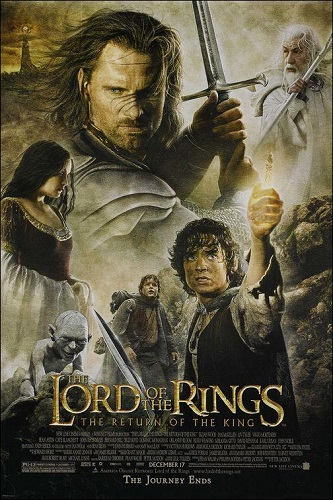

What is the movie about
Synopsis: Sauron's forces have laid siege to Minas Tirith, the capital of Gondor, in their efforts to eliminate the race of men. The once-great kingdom, watched over by a fading steward, has never been in more desperate need of its king. But can Aragorn (Viggo Mortensen) answer the call of his heritage and become what he was born to be? In no small measure, the fate of Middle-earth rests on his broad shoulders. With the final battle joined and the legions of darkness gathering, Gandalf (Ian McKellen) urgently tries to rally Gondor's broken army to action.
He is aided by Rohan's King Theoden(Bernard Hill), who unites his warriors for history's biggest test. Yet even with the forces of men--with Eowyn (Miranda Otto) and Merry (Dominic Monaghan) hidden among them--are no match for the enemies swarming against Gondor. Still, in the face of great losses, they charge forward into the battle of their lifetimes, tied together by their singular goal to keep Sauron distracted and give the Ring Bearer a chance to complete his quest.
Their hopes rest with Frodo (Elijah Wood), a tiny but determined hobbit making a perilous trip across treacherous enemy lands to cast the One Ring into the fires of Mount Doom. The closer Frodo gets to his final destination, the heavier his burden becomes and the more he must rely on Samwise Gamgee (Sean Astin). Gollum--and the Ring itself--will test Frodo's allegiances and, ultimately, his humanity. The Lord of the Rings: The Return of the King concludes the epic story of these characters, their relationships and rivalries, and reveals how through courage, commitment and determination even the least of us can change the world. (more info)